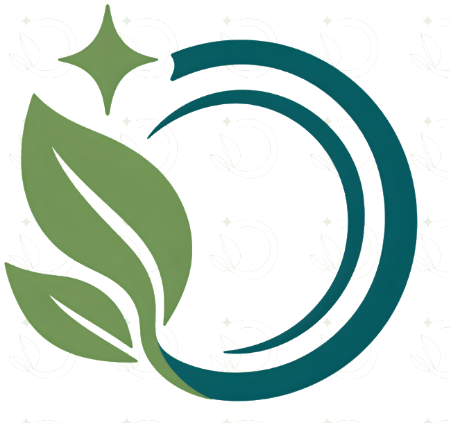

الخطوة القادمة للتغذية في ظفارWhat comes next for nutrition in Dhofar
مشاريع قيد التخطيط لتوسيع الوصول إلى أخصائي التغذية.Projects in planning to widen access to a dietitian.

من الكشف المبكر عن سوء التغذية، إلى الإحالة والعلاج التغذوي الطبي والمتابعة، حتى ما بعد الخروج. رعاية متصلة بين مرافق ظفار الصحية.From early malnutrition screening to referral, medical nutrition therapy and follow-up, through discharge and beyond. Connected care across Dhofar's health facilities.
ابدأ الرحلةStart the journey↓يعمل الفريق في المستشفيات ومراكز الرعاية الأولية والمجمعات الصحية، ليصل المريض إلى أخصائي التغذية في أقرب مرفق إليه.The team works across hospitals, primary care centres and health complexes, so every patient can reach a dietitian close to home.
تعمل خدمات التغذية في الرعاية الصحية الأولية والمستشفيات بمحافظة ظفار معًا تحت مظلة قسم التغذية العلاجية بمستشفى السلطان قابوس، لينتقل المريض بين المراكز الصحية والعيادات التخصصية والمستشفى بإحالة منسقة ومتابعة متصلة.Primary health care and hospital nutrition services in Dhofar work together under the Department of Nutrition & Dietetics at Sultan Qaboos Hospital, so patients move between health centres, specialist clinics and hospital care with coordinated referral and continuous follow-up.
عيادات التغذية في الرعاية الصحية الأولية: تقييم واستشارة ومتابعة تغذوية قريبًا من مجتمع المريض.Primary health care nutrition clinics: nutrition assessment, counselling and follow-up close to patients’ communities.
رعاية تغذوية لحالات السكري والسمنة والحمل والأطفال وأمراض الكلى في المجمعات الصحية والمستشفيات.Nutrition care for diabetes, obesity, pregnancy, children and kidney conditions in health complexes and hospitals.
رعاية تغذوية فردية أثناء التنويم، ودعم تغذوي بالمكملات أو التغذية الأنبوبية، وتخطيط للخروج.Individual nutrition care during admission, nutrition support with supplements or tube feeding, and discharge planning.
عندما يحتاج المريض رعاية أكثر تخصصًا، يُحال من المركز الصحي إلى العيادة التخصصية أو المستشفى.When a patient needs more specialised care, they are referred from the health centre to a specialist clinic or the hospital.
بعد العلاج أو الخروج من المستشفى، تعود المتابعة إلى العيادة المناسبة أو أقرب مركز صحي.After treatment or discharge, follow-up returns to the appropriate clinic or the nearest health centre.
يصل المريض إلى المستوى المناسب من الرعاية حسب حالته واحتياجه التغذوي.Patients reach the level of care that fits their condition and nutrition needs.
تستمر خطة التغذية مع المريض بين المستشفى والعيادات والمراكز الصحية.The nutrition plan continues with the patient between hospital, clinics and health centres.
تُقدَّم الاستشارة والمتابعة التغذوية في أقرب مرفق صحي إلى المريض.Nutrition counselling and follow-up happen at the health facility closest to the patient.
أداة الكشف الشامل عن سوء التغذية (MUST) تُستخدم لكل بالغ في أول زيارة. ثلاثة أسئلة تحدّد مستوى الخطر والإجراء التالي.The Malnutrition Universal Screening Tool is used for every adult at first contact. Three questions decide the risk level and the next step.
للأطفال: منحنيات النمو.Children: growth charts. يُقاس الوزن والطول ومحيط الرأس ويُتابع على منحنيات النمو؛ أي انحراف عن المسار يستدعي الإحالة لأخصائي التغذية.Weight, length/height and head circumference are plotted on growth charts; any drop across centiles triggers a dietitian referral.
من سرير المريض إلى المطبخ والمجتمع، ومن الورق إلى الأنظمة الرقمية. اضغط على أي خدمة لمعرفة المزيد.From the bedside to the kitchen and the community, and from paper to digital systems. Tap any service to learn more.
مشاريع قيد التخطيط لتوسيع الوصول إلى أخصائي التغذية.Projects in planning to widen access to a dietitian.
اضغط على أي مرفق لمعرفة أيام العيادة والخدمات. الخطوط تمثل مسار الإحالة والمتابعة بين المرافق ومستشفى السلطان قابوس.Tap any facility for clinic days and services. Lines show referral and follow-up paths between facilities and Sultan Qaboos Hospital.
إعداد أخصائية التغذية ثريا الرواسPrepared by Dietitian Thuraiya Al Rawas